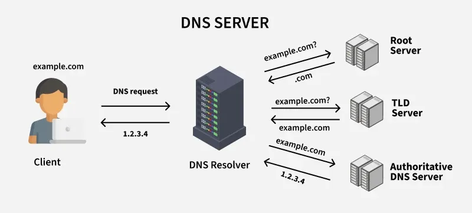

DNS is the global, distributed system that translates the human-friendly domain names into the computer-friendly IP addresses. Without it, you'd have to memorize hundreds of IP addresses to browse the web.

Step 1: Checking the Local Cache
Before doing extra work, your computer first checks if it already knows the website's IP address to save time. It checks in this order:
1.Browser Cache: Recently visited websites saved in your browser.
2.OS Cache: Stored by your computer’s operating system.
3.Router Cache: Sometimes saved in your Wi-Fi router.
If found here: Your browser connects immediately, making the website load much faster.
Step 2: The Recursive Resolver
If the IP address isn’t in any local cache, your computer asks a Recursive DNS Resolver for help.
Who It Is:
Usually provided by your ISP.
Or you can use public ones like Google (8.8.8.8) or Cloudflare (1.1.1.1).
Why "Recursive":
It does all the work to find the correct IP.
It searches step-by-step through the DNS system until it gets the final answer
Step 3: The Hierarchical Search (Global Phonebook)
The Recursive Resolver searches step-by-step through the DNS system to find the website’s IP:
Root Servers
First stop: The resolver asks, “Where can I find .com domains?”
Root server replies with TLD server info.
TLD Servers:
Next, it asks, “Where can I find google.com?”
TLD server replies with Google’s authoritative server info.
Authoritative Server:
Finally, it asks, “What is the IP for www.google.com?”
Server replies: 142.250.72.206 (Google’s IP).
Step 4: The Journey Back
Authoritative Server → Resolver: Sends the correct IP to the Recursive Resolver.
Resolver Caches It: Stores the IP for a while (TTL) to answer future requests quickly.
Resolver → Computer: Sends the IP to your computer’s operating system.
Computer → Browser: Your OS gives the IP to the browser, so it can connect to the website.
Step 5: The Final Connection
Your browser now has the IP address (e.g., 142.250.72.206).
It connects to the server on port 443 (HTTPS).
The browser asks “Please send me the webpage for www.google.com.”
The DNS process is done and the website starts loading.